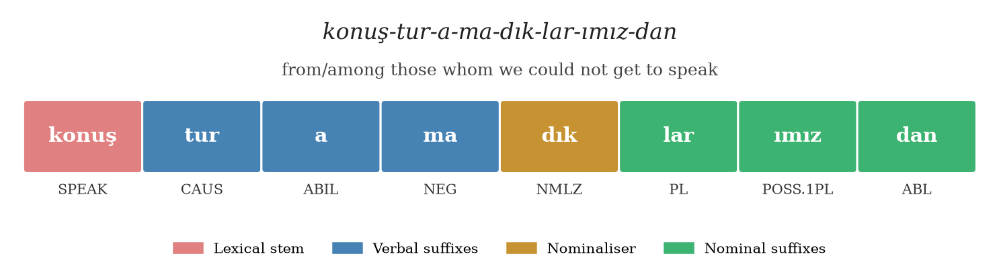
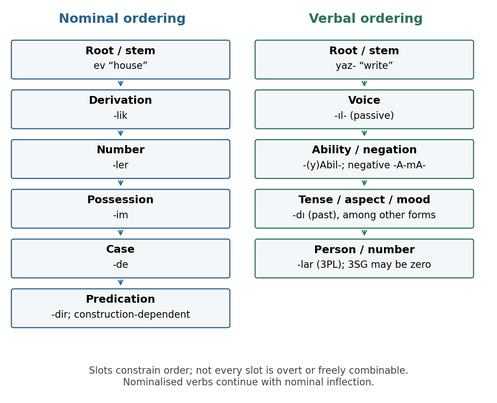
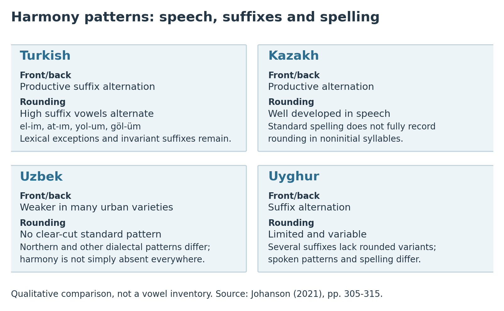

2 The Computational Phenotype of Turkic Languages
After reading this chapter, you will be able to:
- Explain agglutination and distinguish morphemes, morphs, words and model tokens
- Describe vowel harmony, how it creates suffix allomorphy, and which alternations the spelling shows
- Explain the role of the case system in Turkic syntax, including case ambiguity and differential object marking
- Characterise SOV base order, scrambling and pro-drop
- Describe participial and converbal clauses and why they create long-distance dependencies
- Identify which features are constant across the family and which vary, and turn each into a testable question about NLP systems
This chapter introduces the linguistic patterns used throughout the book: suffixation, vowel harmony, case, word order and non-finite clauses. It explains what each pattern means for text processing, while keeping linguistic facts separate from claims about model performance.
Most worked analyses in this chapter use Turkish, giving readers a consistent starting point. Comparisons with Kazakh, Kyrgyz, Uzbek, Uyghur, Turkmen and smaller languages show how far each pattern extends. Chapter 5 develops the morphology in detail; later chapters test the computational methods.
2.1 Agglutination and Productive Word Formation
2.1.1 What Agglutination Is
A morpheme is an abstract unit of grammatical or lexical structure; a morph is a surface form used to realise it. Different surface forms of the same morpheme are allomorphs: Turkish plural -lar and -ler realise one plural morpheme. An orthographic word, a morpheme and a language-model token are different units, and their boundaries need not match.
A language is agglutinative when words are built by chaining morphs, each typically expressing one grammatical function, with clear boundaries between them. Johanson (2021, 35) characterises the Turkic word structure as based on “a juxtaposing technique with clear-cut morpheme boundaries”, with “mostly one-to-one correspondence of morphemes and their functions”. This contrasts with:
- Fusional languages (German, Russian, Latin): a single morph can signal several functions at once (case + number + gender in one suffix)
- Isolating languages (Chinese, Vietnamese): grammatical relations expressed by word order and separate particles, with little inflection
They describe tendencies; a language can show several at once. Polysynthesis concerns how much grammatical and lexical information a word can contain; it is a separate dimension from whether its morphs have clear boundaries. A language can be both agglutinative and polysynthetic.
A short example shows the principle. The Turkish word evlerimizden ‘from our houses’ consists of four surface pieces:
| Surface piece | Analysis | Contribution |
|---|---|---|
| ev | house | lexical stem |
| -ler | PL | plural |
| -imiz | POSS.1PL | first-person plural possessor |
| -den | ABL | source (ablative case) |
The same structure appears across the family: Kazakh үй-лер-іміз-ден, Uzbek uy-lar-imiz-dan, with the same order of plural, possessive and case. A short verb works the same way: yaz-ıl-dı-lar ‘they were written’ is stem + passive + past + third person plural.
Turkic agglutination is productive: a single root can yield many well-formed word forms by adding suffixes in a constrained order.
2.1.2 The Suffix Template
Suffix order is constrained. A common verbal pattern is:
Root → Voice → Ability / Negation → Tense/Aspect/Mood → Person/Number
For nouns, it is:
Root → Derivation → Number → Possessive → Case
The slots in these templates interact. Ability and negation restrict one another, as the next example shows. Derivation can also change the inflection that follows: a nominalised verb takes nominal suffixes such as plural, possessive and case. Each suffix operates on the form to its left, so order affects meaning.
Negative ability illustrates both points. Turkish yaz-ıl-a-ma-dı-lar ‘they could not be written’ adds -a-ma- between the passive and the past. Positive ability is a different suffix, -(y)Abil- (yaz-ıl-abil-di-ler ‘they could be written’); the negative form is not simply -abil- plus negation. In this book we segment -a-ma- as two surface pieces, ability and negation, and treat them together as the inability construction; other analyses treat -AmA- as a single morph. Whatever the convention, it has to be stated, because it changes every morpheme count.
A statistical subword tokeniser partitions the written form without changing suffix order. Its pieces may cross morphological boundaries or combine several morphemes, leaving the model to learn the grammatical structure from those pieces.
2.1.3 An Advanced Example
The Turkish word konuşturamadıklarımızdan combines verbal derivation with nominal inflection. It means “from/among those whom we could not get to speak”:
| Surface piece | Gloss | Function |
|---|---|---|
| konuş- | speak | lexical verb stem |
| -tur- | CAUS | causative: make/get someone to speak |
| -a- | ABIL | ability (with the following negation: inability) |
| -ma- | NEG | negation |
| -dık- | NMLZ | non-future nominaliser/participle -DIK |
| -lar- | PL | plural referents: ‘those’ |
| -ımız- | POSS.1PL | first-person plural possessive-form agreement: ‘we’ as the subject of the relative clause |
| -dan | ABL | ablative case: ‘from/among’ |
Under this convention the word has eight surface pieces, each counted as one morpheme: one stem and seven suffixes. There is no buffer consonant in this example. The form is a headless relative clause: the people referred to are understood rather than named by a following noun. The plural -lar- marks those people, whereas -ımız- identifies the subject as ‘we’; it does not express ownership here. The k of -dık- remains unchanged before the consonant-initial plural -lar-.
-DIK is analysed here as a nominaliser; its temporal reading (often past or present relative to the main clause) depends on the construction, so the gloss NMLZ is preferred over “past participle” (Chapter 5 and Chapter 8 use the same analysis). The example is deliberately long; in running text most words carry far fewer suffixes. The long tail of rarer, longer forms is what makes the vocabulary open-ended.


The template summarises common patterns; Chuvash, for example, places possessive marking before plural (Section 5.4.5). Possessive agreement and evidentiality are expressed within suffix chains, while clitics such as Turkish question particle mI and auxiliary constructions such as Kazakh оқи ал- ‘be able to read’ extend across words. Chapter 5 explains these distinctions; Chapter 8 covers analytic predicates.
2.1.4 Unseen Word Forms
Productive suffixation creates well-formed words absent from a finite training corpus. A whole-word model needs a way to handle these unseen forms. Character-complete or byte-level tokenisers can encode them as smaller pieces; other subword tokenisers may return an unknown token. Comparing vocabulary sizes across languages requires matched corpus sizes, domains and tokenisation rules.
Morphemes per word and model tokens per word are different measures. The Hands-On section counts surface segments under an explicit convention. Section 3.6 measures how changing the script affects token counts for the same sentences. Neither, taken alone, is a measure of morphological complexity.
2.2 Vowel Harmony: Rules, Exceptions, and Computational Consequences
2.2.1 The Basic Mechanics
Vowel harmony is the phenomenon by which the vowels in a word are constrained to agree in some phonological property. The most general constraint in Turkic languages is front/back (palatal) harmony. Johanson (2021, 38) describes “intrasyllabic [±front] harmony, which requires the segments of a syllable to be either front or back”, and intersyllabic harmony, which neutralises the front/back distinction under the influence of a preceding syllable.
In Turkish, the eight vowels divide into two sets:
- Front: e, i, ö, ü
- Back: a, ı, o, u
Most native Turkish roots have vowels from one set, with exceptions such as anne ‘mother’, elma ‘apple’ and kardeş ‘sibling’. Harmony within a stem is a strong lexical tendency. Suffix selection is productive: the plural takes -ler after a front vowel (ev-ler, houses) and -lar after a back vowel (araba-lar, cars). It follows the stem’s last vowel even in disharmonic words such as elma-lar. Many other suffixes have four allomorphs, varying in both backness and rounding.
A second harmony axis, labial (round) harmony, governs high suffix vowels (i/ı/ü/u) in Turkish: after a rounded vowel they round, after an unrounded vowel they do not. This gives four-way alternation for suffixes such as the first-person singular possessive -ım/-im/-um/-üm.
2.2.2 Variation Across the Family
Vowel harmony is found throughout the family, but its scope, its exceptions and above all its spelling differ:
- Turkish: backness and rounding harmony in suffixes, both written; lexical exceptions in stems (anne, elma), suffixes with limited or no vowel alternation (-yor, -ken, -ki, -leyin), and loanwords whose final consonant triggers front suffixes (saat-ler, rol-ü, hal-i)
- Kazakh: backness harmony written; rounding harmony is present in pronunciation but not written in the standard orthography, whereas Kyrgyz writes it (Kazakh көзді vs. Kyrgyz көздү, ‘eye-ACC’)
- Kyrgyz: backness and rounding harmony written, including in low vowels (үйлөр ‘houses’)
- Uyghur: backness harmony in many suffixes, plus raising of stem vowels before suffixes, which the script writes out (bala ‘child’, balilar ‘children’)
- Uzbek: suffix vowels are largely fixed in standard spelling (uylar, otlar), while front/back harmony is weaker in many urban varieties and clearer in some northern varieties; standard Uzbek has no clear-cut rounding harmony (Johanson 2021, 307, 313)
- Chuvash: a vowel system that differs markedly from the other languages (Table 2.4)
Table 2.3 shows the same stems with the plural and accusative suffixes in five languages.
| Language | Script | ‘houses’ | ‘horses’ | ‘eyes’ | ‘eye’ (ACC) | ‘arm/hand’ (ACC) | What the spelling shows |
|---|---|---|---|---|---|---|---|
| Turkish | Latin | evler | atlar | gözler | gözü | kolu | backness and rounding written |
| Kazakh | Cyrillic | үйлер | аттар | көздер | көзді | қолды | backness written; rounding not written |
| Kyrgyz | Cyrillic | үйлөр | аттар | көздөр | көздү | колду | backness and rounding written (also in low vowels) |
| Uzbek | Latin | uylar | otlar | koʻzlar | koʻzni | qoʻlni | suffix vowels largely fixed |
| Turkmen | Latin | öýler | atlar | gözler | gözi | goly | backness written; rounding written in some suffixes (genitive gözüň) but not in the accusative |
A vowel inventory records a language’s contrasts. Harmony governs restrictions and alternations involving those contrasts. Uzbek suffixes illustrate how a language can retain a vowel after losing a productive harmonic alternation. For written-text NLP, ask which alternations appear in the spelling.
The recurring sentences (Table 1.4) show these patterns in running text. Kazakh өңір-де-гі ‘in the region’ and бейбітшілік-ті ‘peace-ACC’ take front suffix vowels after front stems, and the accusative begins with т after the voiceless к. Uyghur ھارۋىسىنى (harwisini, ‘its cart’, accusative) shows stem-vowel raising: harwa ‘cart’ becomes harwi- before the suffix. Uzbek Toshkent-da and musobaqa-si keep the same suffix vowels whatever the stem. The full analyses are in Section 5.4.4.
| Language | Vowels (source transcription) | Spelling, in corresponding order | Scope | Source |
|---|---|---|---|---|
| Turkish | i ï ü u ä a ö o | i ı ü u e a ö o | Core short vowels; loan length treated separately | (Johanson 2021, 256, table 14.3) |
| Kazakh | a e ä o ö ị̈ ị ụ ụ̈ | а е ә о ө ы і ұ ү | Near-high qualities use underdots; и and у are not additional simple vowels in this analysis | (Johanson 2021, 263) |
| Kyrgyz | a e i ï u ü ö o; aː eː uː üː öː oː | а е и ы у ү ө о; аа ээ уу үү өө оо | Eight short qualities and six long counterparts; no phonemic long i or ï | (Johanson 2021, 263–64) |
| Uzbek | i u̇ u e ȯ o ȧ å | i u u e oʻ oʻ a o | Johanson’s eight-quality analysis, which he contrasts with the traditional six-phoneme analysis mirrored by the six vowel letters; realisations vary by variety | [Johanson (2021), pp. 273–275, table 14.22; traditional analysis p. 274] |
| Uyghur | i ü u e ö o ä a | ى ۈ ۇ ې ۆ و ە ا | Core qualities; hamza carrier and contextual forms omitted; length is not written | [Johanson (2021), p. 275, table 14.23; p. 413, table 19.6] |
| Chuvash | i ü ï u ị ị̈ ä a | и ӳ ы у ӗ ӑ е а | Short vowels; Russian-loan o and Upper Chuvash variants treated separately | (Johanson 2021, 270–71, table 14.17) |
The table uses Johanson’s transcription, with its own symbol conventions. His eight-quality analysis of Uzbek distinguishes sounds that the six vowel letters do not consistently separate. Counts also depend on variety and on how loan vowels and length are treated. Before using these symbols as IPA training labels, consult a phonetic description of the intended variety.

2.2.3 Exceptions
Suffix harmony is governed by the last vowel of the stem, so loanwords with mixed vowels such as telefon or kitap are regular (telefon-lar, kitap-lar). The genuine exceptions are lexical: stems whose final consonant is pronounced palatalised and therefore takes front suffixes despite a back vowel (saat-ler ‘hours’, rol-ü ‘role-ACC’, hal-i ‘state-ACC’), and suffixes outside the regular pattern (-yor, -ken, and usually -ki). Turkish -ki has exceptions such as dünkü ‘pertaining to yesterday’ (Johanson 2021, 493).
An analyser needs lexical information about these exceptional stems. A statistical model must learn their behaviour from examples; a uniform harmony rule will miss them.
2.2.4 Computational Consequences
Suffix allomorphy. The same morpheme has two or four surface forms (more with consonant alternation). A morphological analyser must map -ler and -lar to one plural; a machine translation system generating Turkish must produce the correct allomorph.
What the representation exposes. Character representations expose the letters relevant to written harmonic alternations, usually only a few characters apart. Subword models can also learn these regularities, but their token inventory and training examples determine how directly the relevant vowels are represented: when the stem vowel and the suffix vowel fall into different tokens, the model must learn the dependency between token identities. The usefulness of either representation should be evaluated on regular forms and on lexical exceptions separately.
Allomorphs multiply vocabulary entries. Forms such as -lar/-ler and -dı/-di/-du/-dü/-tı/-ti/-tu/-tü can be represented by different subword pieces, including pieces crossing the stem–suffix boundary. They need not each occupy a whole vocabulary entry. Morphological segmentation alone does not merge allomorphs: sharing a canonical unit or grammatical label requires an additional normalisation or analysis step (Section 7.2).
Orthography differs from phonology. Whether harmony is written matters more for text NLP than whether it is pronounced. Kazakh does not spell rounding harmony while Kyrgyz does, so the same suffix has more written variants in Kyrgyz, a difference a transfer model must absorb.
2.3 The Case System as Syntactic Infrastructure
2.3.1 The Case Inventory
Turkic languages use morphological case to mark the grammatical relations of noun phrases. Most Turkic languages have at least six cases: nominative, accusative, dative, locative, ablative and genitive. Some have more, such as an instrumental (Chuvash, Sakha, Kazakh), an equative or a directive. Sakha is the notable outlier: it has no genitive case but has partitive, comitative, comparative and instrumental cases [Johanson (2021), chapter 22; p. 463]. The cases are expressed by suffixes added after number and possessive marking.
| Case | Function | Turkish | Kazakh | Uzbek | Kyrgyz | Turkmen |
|---|---|---|---|---|---|---|
| Nominative | Unmarked nominal form | ev | үй (üy) | uy | үй (üy) | öý |
| Accusative | Specific direct object | ev-i | үй-ді (üy-di) | uy-ni | үй-дү (üy-dü) | öý-i |
| Dative | Indirect object / goal | ev-e | үй-ге (üy-ge) | uy-ga | үй-гө (üy-gö) | öý-e |
| Locative | Location | ev-de | үй-де (üy-de) | uy-da | үй-дө (üy-dö) | öý-de |
| Ablative | Source / comparison | ev-den | үй-ден (üy-den) | uy-dan | үй-дөн (üy-dön) | öý-den |
| Genitive | Possession | ev-in | үй-дің (üy-diñ) | uy-ning | үй-дүн (üy-dün) | öý-üň |
2.3.2 How Case Does What Word Order Does in English
In English, “The dog bit the man” and “The man bit the dog” have opposite meanings because position determines grammatical role. In Turkish, the same distinction is carried largely by case suffixes:
- Köpek adam-ı ısırdı. (dog man-ACC bit: the dog bit the man)
- Adam-ı köpek ısırdı. (man-ACC dog bit: the dog bit the man, with a different information structure)
- Adam köpeğ-i ısırdı. (man dog-ACC bit: the man bit the dog; note köpek → köpeğ- before a vowel)
Here the accusative suffix marks the direct object in either position, and the nominative subject has no suffix. Case marking is an important cue to grammatical relations, but the relationship is not one-to-one, as the next two subsections show.
2.3.3 Differential Object Marking
Not every direct object carries the accusative. Turkish marks specific objects and leaves non-specific objects bare:
- Ali kitap okudu. ‘Ali read (a book / books)’: non-specific object, no suffix; the bare object normally stands directly before the verb.
- Ali kitab-ı okudu. ‘Ali read the book’: specific object, accusative -ı.
A parser must combine case, position and context. The accusative does not universally mark definiteness, and an unmarked noun can be a bare preverbal object as well as a subject.
2.3.4 Case Ambiguity
A written ending can have more than one morphological analysis. Turkish ev-i can be ‘house-ACC’ (evi gördüm ‘I saw the house’) or ‘house-POSS.3SG’ (onun evi ‘his/her house’); ev-in can be ‘house-GEN’ (evin kapısı ‘the door of the house’) or ‘house-POSS.2SG’ (senin evin ‘your house’). These are homophonous suffixes of different categories rather than syncretism within the case paradigm. A morphological analyser typically returns all readings, and the sentence context selects one: onun or senin before the noun, or the verb that governs it.
Case also differs from grammatical relation and from semantic role. A dative noun phrase can be a goal (eve gitti ‘went home’), a recipient (Ali’ye verdi ‘gave to Ali’) or the experiencer-like argument of some verbs. In nominalised subordinate clauses the subject is often in the genitive rather than the nominative: Ali’nin gel-diğ-i-ni biliyorum ‘I know that Ali came’ (Ali-GEN come-NMLZ-POSS.3SG-ACC). Section 2.5 returns to these clauses.
2.3.5 Computational Consequences
These consequences are hypotheses about systems; later chapters test them.
Argument detection. English-trained parsers learn strong positional cues (subject before the verb, object after it). In Turkic languages, case, agreement and position all carry information, and their weights differ from English. Positional biases learned from English can therefore transfer poorly.
Explicit versus implicit morphology. A dependency parser can take predicted morphological features as input, predict them jointly with dependencies, or learn morphological cues within contextual representations. The biaffine parser (Dozat and Manning 2017), for example, scores learned token representations without requiring a separate morphological step. Compare otherwise matched models with and without predicted features to test their contribution (Chapter 8).
Case suffixes in NER. Named entities carry case suffixes in ordinary text: Kazakh Алматы-дан ‘from Almaty’, Абай-дың ‘of Abai’. Mention detection must preserve the original span; mapping Алматыдан to the canonical name Алматы for linking or counting is a separate step, which can use a morphological analyser (Chapter 9).
Machine translation. Translation into a Turkic language must generate the correct case and agreement on the target side. Evaluate case and agreement errors directly rather than assuming that a separate syntactic analysis of the source is required (Chapter 10).
2.4 SOV Base Order and Scrambling
2.4.1 Default SOV Order
The usual unmarked constituent order in Turkic is subject–object–verb (SOV). Some contact varieties also have unmarked verb-medial orders (Chapter 8). Johanson (2021, 34) describes Turkic as possessing “a basic left-branching constituent order with dependents preceding their heads” with the unmarked order being “subject + direct object + predicate.”
The same modifier-before-head principle places determiners, attributive adjectives and relative clauses before the head noun (Johanson 2021, 34), and Turkic uses postpositions rather than prepositions (Johanson 2021, 36).
2.4.2 Scrambling
While SOV is the default, constituents can be reordered for discourse purposes. The order is tied to information structure: in Turkish, the position directly before the verb is associated with focus, the sentence-initial position with topic, and material after the verb with backgrounded information (Hoffman 1994). The felicity of an order therefore depends on context, which question-answer pairs make visible:
- Kitabı kim okudu? ‘Who read the book?’ → Kitabı Ali okudu. (OSV; Ali, the answer, stands before the verb)
- Ali ne yaptı? ‘What did Ali do?’ → Ali kitabı okudu. (SOV)
- Ali kitabı okudu mu? ‘Did Ali read the book?’ → Okudu Ali kitabı. (VSO; the verb is in focus, the rest is given)
Other permutations, such as Ali okudu kitabı (SVO, with the book as an afterthought), also occur in suitable contexts; Chapter 8 lists all six orders. Not every noun phrase can move equally freely: bare, non-specific objects such as kitap in Ali kitap okudu normally stay directly before the verb.
2.4.3 Pro-Drop
Turkic languages are pro-drop: subjects and objects may be omitted when their referents are recoverable from the context, and person-number agreement largely makes subject pronouns redundant (Johanson 2021, 35). Person-number agreement can help identify an omitted subject, while an overt pronoun can still contribute contrast or discourse information:
- Ben geliyorum. (I am coming, with an explicit pronoun)
- Geliyorum. (am coming; the pronoun is dropped and -um marks 1SG)
- Geliyor. (is coming; 3SG, no overt subject and no agreement suffix)
In the third-person singular example Geliyor, neither a subject pronoun nor a person suffix is overt; the subject must be inferred from context. In the other persons, as in Spanish or Italian, the agreement suffix identifies the person and number of the dropped subject, but not its referent.
2.4.4 Computational Consequences
Positional features carry different information. Combine case and agreement with word order. English positional biases may transfer poorly, while Turkic patterns such as preverbal focus and adjacent bare objects can still help.
Sequence labelling. A tagger trained only on SOV-ordered text may over-rely on position relative to the verb. Training data with natural scrambling, and evaluation on non-canonical orders, show whether this happens.
Pro-drop complicates coreference resolution. With no overt subject, a system must recover the referent from context. Third-person singular forms may also lack an overt agreement suffix. Evaluate subject resolution in context, including zero arguments that systems designed around overt subjects may overlook.
Pro-drop complicates MT into non-pro-drop languages. When translating Kazakh or Turkish into English or French, the system must generate a pronoun absent in the source, which requires identifying the implicit subject from context.
2.5 Non-Finite Subordination: Participial and Converbal Clauses
2.5.1 Subordination Without Complementisers
English subordinates clauses with function words: “the man who came”, “I know that he left”, “after he arrived”. The Turkic strategy is different: dependent clauses are headed by non-finite forms (action nominals, participles and converbs) carrying bound markers that do the work of English subordinating conjunctions (Johanson 2021, 35). The verb of the subordinate clause appears in a non-finite form, and the clause type is marked morphologically on that verb. (Finite alternatives also exist, such as Turkish ki-clauses or quotative constructions with diye ‘saying’.) Johanson (2021, 34) notes that the “left-branching constituent order” with “dependents preceding their heads” extends to clause structure: embedded clauses appear to the left of their head.
2.5.2 Participial Relative Clauses
In English, “the man who came” contains the relative pronoun who and a finite verb came. In Turkish, the equivalent is gelen adam:
- gel- (come) + -en (participle) = gelen ‘who comes / who came’
- gelen adam = the man who came
The participle modifies adam ‘man’. The entire clause, including its own arguments and adverbs, appears inside the noun phrase, before the noun:
- Dün buraya gelen adam ‘the man who came here yesterday’ (yesterday here come.PTCP man)
Turkish participles differ according to what is relativised. In a common subject relative, the participle is -(y)An: kitabı okuyan öğrenci ‘the student who read the book’. A common non-subject relative, such as one relativising an object or location, uses -DIK for a non-future reading or -(y)AcAK for a future reading. The participle carries a possessive suffix agreeing with the genitive subject: öğrencinin okuduğu kitap ‘the book that the student read’ (student-GEN read-NMLZ-POSS.3SG book).
Kazakh and Uzbek place participles before the noun too, but without this subject/non-subject split. Both Kazakh оқушы оқыған кітап ‘the book that the student read’ and кітапты оқыған оқушы ‘the student who read the book’ use -ған. Uzbek -gan works similarly, as in oʻquvchi oʻqigan kitob.
Turkmen uses -An in both kitaby okan okuwçy ‘the student who read the book’ and okuwçynyň okan kitaby ‘the book that the student read’. In the second construction, the possessive suffix agreeing with the genitive subject attaches to the head noun, kitab-y. Turkish puts that agreement on the participle, okuduğu. Adapting a Turkish analyser or annotation scheme therefore requires changing where this agreement is represented.

2.5.3 Converbs and Nominalised Clauses
For adverbial clauses (temporal, conditional, manner), Turkic uses converbs, non-finite verb forms that mark the adverbial relation morphologically, alongside nominalised forms followed by case suffixes or postpositions:
- gel-ince ‘when/as soon as (someone) came’: converb -(y)IncA
- gel-erek ‘by coming, while coming’: converb -(y)ArAk
- gel-ip ‘having come, and then’: converb -(y)Ip, which links clauses in a sequence
- gel-dik-ten sonra ‘after coming’: nominaliser -DIK + ablative + postposition sonra, not a converb but a nominalised clause
- gel-se ‘if (someone) came’: conditional -sA, which can also be fully finite
These constructions mark adverbial relations through verb morphology, sometimes together with a postposition such as sonra.
2.5.4 Long-Distance Dependencies
An embedded clause can make a noun phrase long even when the participle stays close to its head noun, as in gelen adam. Longer arcs connect the clause’s earlier dependents (Dün, buraya) to the participle, or connect the whole phrase’s head noun to the final main verb. A left-to-right processor must keep those dependents pending until it reaches their heads (Chapter 8). Postverbal and other dependents that follow their heads create a different processing pattern.
2.5.5 Computational Consequences
Clause boundaries without a marker word. Systems for event extraction, coreference and semantic role labelling that have been developed for English can use relative pronouns and complementisers as clause-boundary cues. In Turkic text the cue is a suffix on the embedded verb. Whether a given system misses non-finite clauses should be tested, for example by evaluating event recognition separately on finite and non-finite predicates.
Participial forms are morphologically ambiguous. The ending -en in Turkish can be a participle (gelen ‘who comes’) or part of other forms; the same string -DIK appears in relative clauses, complement clauses and adverbial clauses. Morphological disambiguation helps to identify clause boundaries.
Information extraction must look inside noun phrases. Events described in participial clauses are embedded inside noun phrases: öğrencinin okuduğu kitap contains a reading event. A system that only looks at finite main verbs misses them.
2.6 Shared Patterns and Variation
2.6.2 What Varies
The shared patterns leave room for important differences:
Vowel harmony and its spelling. Turkish and Kyrgyz write backness and rounding harmony; Kazakh writes backness but not rounding; Uzbek suffix vowels are largely fixed; Turkmen writes rounding in some suffixes but not others (Table 2.3); Uyghur writes stem-vowel raising (see the list above). Harmony-based features useful for Turkish therefore cannot be applied identically to Uzbek.
Case inventory. Most languages have the six core cases plus some extras (an instrumental in Chuvash, Kazakh and Sakha, for example). Sakha’s system differs most: it has no genitive but has partitive, comitative and comparative cases.
Morpheme inventories. While the template is shared, the specific suffixes differ: aspect markers, evidential categories and certain voice morphemes vary across branches. A morphological analyser built for Turkish cannot be applied to Sakha without new morphotactics, morphophonology and lexicon.
Script. As detailed in Chapter 3, contemporary Turkic languages are written in Latin, Cyrillic and Perso-Arabic scripts, and Old Turkic in a runic script. Kazakh has a planned transition from Cyrillic to Latin, and Uzbek uses Latin officially while Cyrillic remains in wide use. Script differences affect tokenisation and string overlap, so whether to convert scripts before cross-lingual transfer should be tested for each model and task.
Vocabulary. Related languages share vocabulary, but spelling can obscure shared forms. Section 3.6 measures written overlap before and after script conversion.
2.6.3 The Exceptional Cases: Chuvash and Khalaj
Chuvash is the only surviving descendant of the Oghur branch, which split from Common Turkic early (Johanson 2021, 20, 25). Its best-known divergences are rhotacism and lambdacism: where other Turkic languages have z, Chuvash has r, and where they have š, Chuvash has l (Chuvash χịl vs. Common Turkic ḳïš ‘winter’) (Johanson 2021, 23, 26). For NLP, the available evidence suggests testing Oghur transfer separately: on the TurkicNLP morphological challenge set, the rule-based Apertium analyser detected the target phenomena in more Chuvash sentences than the multilingual neural analyser, and the authors attribute this to Chuvash’s divergent morphology limiting transfer from the other branches (Hakimov 2026). With 20 sentences per language, the set supports a diagnostic and nothing stronger; it cannot rank languages.
Khalaj (Arghu branch) is a small language of Iran with archaic features, including the retention of primary long vowels (Johanson 2021, 26). Primary long vowels are also retained systematically in Turkmen and Sakha, so vowel length is not unique to Khalaj within the modern family (Johanson 2021, 26; Gökçür 2016). Khalaj has very few NLP resources. In TurkicNLP it has no Apertium transducer; the multilingual neural analyser serves it through Turkish as a proxy language (Hakimov 2026).
2.7 Hands-On: Counting Segments in Turkish, Kazakh and Turkmen
Question. Where does automatic segmentation agree with the stated surface analysis?
Inputs. The Turkish, Kazakh and Turkmen sentences below; TurkicNLP 0.5.0 and the named transducers.
Compute. CPU; download the required analyser resources first.
Output. Per-word segments, exact agreement and segments per word.
Interpretation. Inspect boundary errors and analytic constructions before comparing averages.
Start by segmenting a few words by hand under a stated convention, then compare the analyser’s output. This experiment reports surface segments for that sample and configuration. A larger corpus study would also report errors and coverage alongside the mean.
Counting convention. As in Table 2.2, count the stem and every overt affix. Attach buffer consonants to the following suffix (dığ-ı-ndan), stem-final alternations stay in the stem (kitab-ı), and zero morphemes (3SG agreement) are not counted. This is the convention of the TurkicNLP segmentation test set (Hakimov 2026); other conventions give other counts.
Setup. pip install "turkicnlp[hfst,transformers]==0.5.0". The segmenter combines Apertium readings (hfst) with a multilingual neural analyser (transformers). It runs with only one of them, so the code prints which analysers were actually loaded; report this with any result. Before the first run, download each language’s morphology resources with turkicnlp.download("tur", processors=["morph"]) and the equivalent calls for "kaz" and "tuk"; model downloads require network access.
import turkicnlp
from turkicnlp.processors.morpheme_tokenizer import MorphemeTokenizer
# Reference segmentations under the exercise convention: stem + overt affixes; buffer
# consonants go with the following suffix; zero morphemes are not counted.
reference = {
"tur": [("Ali", "Ali"), ("kitabı", "kitab-ı"), ("okuyamadığından", "oku-ya-ma-dığ-ı-ndan"),
("çok", "çok"), ("üzgündü", "üzgün-dü")],
"kaz": [("Әли", "Әли"), ("кітапты", "кітап-ты"), ("оқи", "оқ-и"),
("алмағандықтан", "ал-ма-ған-дық-тан"), ("өте", "өте"),
("қайғылы", "қайғы-лы"), ("болды", "бол-ды")],
"tuk": [("Ali", "Ali"), ("kitaby", "kitab-y"), ("okap", "oka-p"),
("bilmedigi", "bil-me-dig-i"), ("üçin", "üçin"), ("gaty", "gaty"),
("gamgyn", "gamgyn"), ("boldy", "bol-dy")],
}
print("turkicnlp", turkicnlp.__version__)
for lang, words in reference.items():
seg = MorphemeTokenizer(lang=lang)
seg.load()
# private flags in 0.5.0: which analysers were actually loaded
print(f"{lang}: neural={seg._neural_available} hfst={seg._hfst_available}")
n_reference = n_auto = exact = 0
for word, g in words:
r = seg.segment(word)
auto = "-".join(m for m, _ in r.labeled)
n_reference += len(g.split("-")); n_auto += len(r.labeled); exact += auto == g
print(f" {word:<17} reference {g:<22} auto {auto:<22} [{r.source}]")
n = len(words)
print(f" exact {exact}/{n}; segments per word: reference {n_reference/n:.2f}, automatic {n_auto/n:.2f}\n")The output below was reproduced on 13 October 2026 using the local toolkit source reporting version 0.5.0, with only the Apertium transducers available (the neural model was not installed). The package version alone is not an exact source pin:
turkicnlp 0.5.0
tur: neural=False hfst=True
Ali reference Ali auto Ali [hfst]
kitabı reference kitab-ı auto kitab-ı [hfst]
okuyamadığından reference oku-ya-ma-dığ-ı-ndan auto oku-ya-ma-dı-ğından [hfst]
çok reference çok auto çok [hfst]
üzgündü reference üzgün-dü auto üzgün-dü [hfst]
exact 4/5; segments per word: reference 2.40, automatic 2.20
kaz: neural=False hfst=True
Әли reference Әли auto Әли [hfst]
кітапты reference кітап-ты auto кітап-ты [hfst]
оқи reference оқ-и auto оқ-и [hfst]
алмағандықтан reference ал-ма-ған-дық-тан auto ал-ма-ған-ды-қтан [hfst]
өте reference өте auto өт-е [hfst]
қайғылы reference қайғы-лы auto қайғы-лы [hfst]
болды reference бол-ды auto бол-ды [hfst]
exact 5/7; segments per word: reference 2.14, automatic 2.29
tuk: neural=False hfst=True
Ali reference Ali auto Ali [none]
kitaby reference kitab-y auto kitab-y [hfst]
okap reference oka-p auto oka-p [hfst]
bilmedigi reference bil-me-dig-i auto bil-me-di-gi [hfst]
üçin reference üçin auto üçin [hfst]
gaty reference gaty auto gat-y [hfst]
gamgyn reference gamgyn auto gamgyn [hfst]
boldy reference bol-dy auto bol-dy [hfst]
exact 6/8; segments per word: reference 1.75, automatic 1.88The Turkmen lines were produced on 18 October 2026 with the same toolkit version and the Apertium Turkmen transducer (beta; SHA-256 of tuk.automorf.hfst begins 528202a5). The Turkmen sentence Ali kitaby okap bilmedigi üçin gaty gamgyn boldy ‘Ali was very sad because he could not read the book’ parallels the other two.
One reference segmentation follows the spelling rather than the morphology: Kazakh оқи is the stem оқы- ‘read’ plus the converb -й, which the orthography writes as и (ы + й → и); the convention assigns -и to the suffix. The examples show two kinds of error. Boundaries are misplaced in the nominalised forms okuyamadığından, алмағандықтан and bilmedigi. Short words can also receive the wrong reading: Kazakh өте ‘very’ is split as a form of өт- ‘pass’, and Turkmen gaty ‘very’ as an accusative of gat ‘layer’.
Word boundaries also affect the average. Turkish expresses inability in one word here; Kazakh оқи алмағандықтан and Turkmen okap bilmedigi use two. Turkmen adds the postposition üçin where the other examples use a case suffix. The resulting averages describe these sentences under this counting convention, not the languages as a whole.
For larger samples, the TurkicNLP paper reports exact segmentation of 89% for the hybrid segmenter, against 79% for Apertium alone and 68% for the neural analyser alone, on a test set of 483 words in 13 categories across 20 languages (Hakimov 2026). The authors note that the set is small, that the gold segmentations for nine languages are drafts awaiting native-speaker verification, and that it was used during development, so the scores are likely optimistic. Each result records which analysis produced it (seg.segment(word).source is "hfst", "neural" or "greedy").
Status: demonstration. The outputs above are recorded. Exercise 5 adds a related segmentation check.
What to Take Forward
Morphemes, written words and model tokens are different units, and a system’s score depends on which one it counts. Harmony changes suffix forms; case, word order and context express grammatical relations; participles and converbs connect clauses. The segmentation comparison illustrates how finite-state and neural analyses can complement each other, though its small, development-used set still includes draft gold analyses. Before evaluating a system, decide which construction and counting unit the task needs. Chapter 3 turns to scripts and spelling conventions.
Further Reading
- Turkic morphology and syntax: Johanson (2021) (especially chapters 14–15 on phoneme systems and harmony) is the primary linguistic reference for the features described in this chapter.
- Agglutination and NLP: Oflazer (1994) gives a two-level description of Turkish morphology, an approach that later Turkic finite-state analysers build on.
- Word order and information structure: Hoffman (1994) relates Turkish word orders to topic and focus.
- Subword tokenisation: Sennrich, Haddow, and Birch (2016) describes BPE; Rust et al. (2021) and Petrov et al. (2023) show how multilingual tokenisers disadvantage many languages; Hakimov (2026) measures this for 20 Turkic languages.
- Kardeş-NLU: Senel et al. (2024) shows that a high-resource relative (Turkish) helps cross-lingual transfer to five other Turkic languages.
- Universal Dependencies and Turkic syntax: Nivre et al. (2016) and Türk et al. (2022) cover the UD annotation framework applied to Turkish.
Exercises
Segmenting words. Segment evlerimizden and explain the contribution of each piece. Then compare yazıldılar and yazılamadılar. Use the analyses yaz-ıl-dı-lar and yaz-ıl-a-ma-dı-lar to identify passive voice, past and agreement, and explain how the second form adds negative ability. Under this chapter’s surface-segmentation convention, how many pieces does each word contain? Why need this count not equal the number of language-model tokens?
Vowel harmony and consonant alternation. Add the plural suffix to ev, araba, göz and kol. Separately, form the third-person singular past of gel-, bak-, gör-, bul- and git-. Identify which changes follow vowel harmony and which come from consonant assimilation. Compare a regular example with one of the exceptional stems in Section 2.2.
Case and word order. Translate Kitabı Ayşe okudu and Ayşe kitabı okudu into English. Give a question that each order would answer naturally. Then compare Ayşe kitap okudu: what changes when the accusative is absent? Write the sentence with the subject omitted (pro-drop) and explain what must be recovered from context.
Participial clauses. Translate Dün şehre gelen adam and Ali’nin okuduğu kitap. Identify the participle in each, say whether the head noun is the subject or a non-subject of the relative clause, and sketch the dependency structure.
Checking a segmenter. Run
MorphemeTokenizer(lang="tur")on yazıldılar and yazılamadılar and on the Kazakh жазылды and жазыла алмады. Report which analysers were loaded. Where does the segmenter agree with your segmentation from Exercise 1, and where does it differ?Segments per word across the family. Take the same short text in Turkish, Kazakh, Uzbek and Tatar (for example a FLORES-200 paragraph). Segment 30 words per language by hand under the chapter’s convention, then compare with the automatic output as in the Hands-On section. Report exact agreement, the gold and automatic means, and the words where analytic constructions change the word count.
Choosing a donor. You need a Kyrgyz dependency parser and have no Kyrgyz training data. Propose Turkish and Kazakh donor systems, recording their training data, input scripts and annotation conventions, and explain why either might be preferable. Design a small target-language evaluation comparing the available systems and, where supported, native-script and transliterated input. Which result would justify the cost of script conversion?